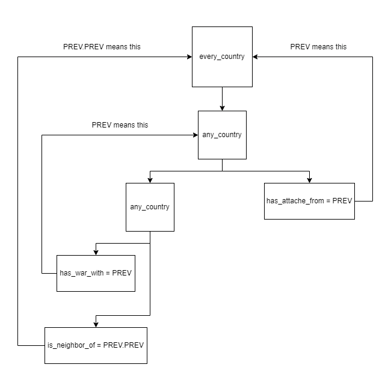

作用域
原页面：Scopes
作用域 change the currently-selected entity where the 效果 should apply or which is checked by the 触发器. Each one must follow the same formatting of scope = { <contents> }.
When a scope is used as for effects, each effect inside of the scope's block is executed. Conversely, when a scope is used as for triggers, it serves as a logical conjunction, requiring every trigger in the scope's block to be met for that scope to evaluate as true.
In addition to serving as blocks for effects or triggers, some scopes can also serve as targets of effects or triggers: e.g. transfer_state_to = ROOT or owns_state = 123.
However, only some dual scopes can be used as a target. For scopes that cannot be used as targets, PREV, 变量, or 事件目标 can be used to get around this limitation.
类型
Scopes can be thought of as divided into 3 types by purpose:
- Trigger scopes - those that can only be used in trigger blocks, failing when put within an effect block.
- Effect scopes - those that can only be used in effect blocks, failing when put within a trigger block.
- Dual scopes - those that can be put in both trigger and effect blocks without issues.
It is to be noted that trigger or effect scopes cannot ever be used as targets. That is strictly limited to some dual scopes.
Most of the non-dual scopes follow one of these following patterns:
| Prefix | 描述 |
|---|---|
| all_<object> | Trigger scope, evaluated for each contained scope. Returns false when encountering at least one scope that is false, returns true otherwise. |
| any_<object> | Trigger scope, evaluated for each contained scope. Returns true when encountering at least one scope that is true, returns false otherwise. It have optional count = <int>/<variable> functionality which will evaluate true if at least "count" items fulfill the child triggers.
|
| every_<object> | Effect scope, executes the effects on each contained scope that meets the limit in order. |
| random_<object> | Effect scope, executes the effects on a random contained scope that meets the limit. |
Only some scopes that follow this pattern have equivalents with a different pattern. For example, random_owned_controlled_state exists, but every_owned_controlled_state does not. Each of these non-dual scopes cannot select a country that does not exist, with the exception of every_possible_country.
Additionally, scopes can be divided into 6 types by the targets of the scope for which effects are executed or triggers are checked:
- Country scopes - Executed for countries.
- State scopes - Executed for states.
- Character scopes - Executed for characters. Some subsets exist, such as unit leaders and country leaders.
- Division scopes - Executed for divisions.
- MIO scopes - Executed for military industrial organisations.
- Contract scopes - Executed for purchase contracts.
- Special Project scopes - Executed for special projects.
Only 效果 or 触发器 of the same target type can be used. For example, add_building_construction can only be used in a state scope such as random_owned_controlled_state = { ... }, as you can only construct buildings in states. For countries, offsite buildings are used instead.
示例
Example scope with effects: all contained effects are executed for the scope. This adds 10%  稳定度 and 20%
稳定度 and 20%  战争支持度 to the
战争支持度 to the  苏联:
苏联:
SOV = {
add_stability = 0.1
add_war_support = 0.2
}
Example scope with triggers: all contained triggers must return true for the scope; otherwise, the scope returns false. This requires the state 123 (South-West England) to be owned by the  英国 and controlled by
英国 and controlled by  爱尔兰:
爱尔兰:
123 = {
is_owned_by = ENG
is_controlled_by = IRE
}
Example use of PREV as target for non-targetable scope. Since random_country cannot be used as a target, add_to_faction = random_country is not valid syntax; instead, PREV can be used to get around this limitation. The following example adds random country to ROOT's faction:
random_country = {
ROOT = { add_to_faction = PREV }
}
Settings
Scopes can have additional settings to narrow down the usage. This may change how many and which targets it's able to select or what the tooltip shows.
Limiting
Non-dual scopes that select unit leaders or 军工组织（MIO）, such as every_navy_leader, by default only include those that are visible to the player, i.e. those unit leaders whose roles do not have an unfulfilled visible = { ... } and those MIOs that do not have an unfulfilled visible = { ... }. By including include_invisible = yes, this can be changed. This will look as such:
random_army_leader = {
include_invisible = yes
set_nationality = SWE
}
Within only effect scopes, limit = { ... } can be used as a trigger block, evaluated for each possible target contained by the scope. In case of the every_<name> pattern, this will ensure that the tooltip will function properly, which may not be the case when using if directly. In case of the random_<name> pattern, this will remove the possibility of scopes not meeting the triggers being chosen, limiting the selection. For party_leader in specific, the limit must contain has_ideology, while there are no requirements on other scopes. An example of limiting the selection is the following:
every_neighbor_country = { #Targets every neighbor country
limit = {
num_of_military_factories > 5 #Limit the scope to neighbor countries with more than 5 (at least 6) military factories
}
give_military_access = ROOT #Neighbor countries with more than 5 military factories give military access to the ROOT country
}
In case of multiple triggers, limit acts like an AND block, requiring each one to be true. To reiterate, this cannot be used within trigger or dual scopes, only in effect scopes.
For scopes of the every_ type, an additional setting for limiting the selection is random_select_amount. In particular, it takes an integer and limits the maximum amount of chosen scopes to that number, picking a random sub-set if exceeded. It is used as such:
every_country = {
random_select_amount = 3 # Selects 3 random countries
country_event = lottery_win.0
}
Tooltip
By default, using a scope of either of the any_, all_, and every_ types will show a title specific to that scope in the tooltip, such as Every country: or All neighbor states:. If scope limits are used, then this changes to the list of scopes that fulfill the limit, such as Corsica, Rome, Sardinia:. For countries, the order in which country tags are created is used in ordering; for states, the state ID is used. If the tooltip differs depending on the scope where it's executed, such as with if statements, then only the first-selected scope is used in the evaluation.
By using tooltip = loc_key within any non-dual scope, including of the random_ type, the tooltip shown to the player can be changed towards the value of the targeted 本地化 key in the currently enabled language. This will look like the following:
any_country = {
hidden_trigger = {
has_opinion = { target = PREV value > 50 } # Serves as a "limit" hidden from the player.
}
tooltip = any_friendly_country_tt # Replaces "Any country" with the localisation key
has_war_with = ITA
}
The localisation key will be defined as such in any localisation file:
l_english:
any_friendly_country_tt: "Any friendly 国家"
This will appear in the tooltip as such:
|
In tooltips of the every_ type where scope limits are used, by default the tooltip unites it into a single scope, such as Germany, United Kingdom, Soviet Union:. By using display_individual_scopes = yes, this will make each selected scope appear in the tooltip separately. For example:
every_neighbor_country = {
limit = {
OR = { has_government = communism has_government = fascism }
}
display_individual_scopes = yes
if = {
limit = {
has_government = fascism
}
add_war_support = -0.1
}
else = { add_stability = -0.1 }
}
Without displaying individual scopes, this will be shown as one effect block, such as the following:
|
By the nature of tooltips, the if statements for the first country are evaluated and the same tooltip is shown for both countries. This falsely implies that the Soviet Union will have 10%  战争支持度 removed. However, adding
战争支持度 removed. However, adding display_individual_scopes = yes changes it to the following:
|
Empty Effect Scopes
An effect scope argument that is frequently used in conjunction with tooltip is visible_when_empty = yes which will show the scope's effects even when no valid targets can be found (that meet the limit).
Because this allows an empty line of targets to exist in the tooltip, tooltip can be used to describe the targets even if there aren't currently any:
every_other_country = {
limit = {
is_in_faction_with = ROOT
}
tooltip = ALL_OTHER_FACTION_MEMBERS
visible_when_empty = yes
add_political_power = 100
}
Alternatively custom_effect_tooltip could be used directly in front of the scope to show a replacement tooltip for the empty line, with a separate if-statement to verify it is currently empty, this maintains the dynamic target list when any country does meet the requirements.
if = {
limit = {
NOT = {
any_other_country = {
is_in_faction_with = ROOT
}
}
}
custom_effect_tooltip = ALL_OTHER_FACTION_MEMBERS
}
every_other_country = {
limit = {
is_in_faction_with = ROOT
}
visible_when_empty = yes
add_political_power = 100
}
优先级
Within effect scopes of the random_ type, if it is aimed at states, it is possible to prioritize a certain state if possible, by using prioritize as such:
random_owned_controlled_state = {
prioritize = { 123 321 }
limit = {
is_core_of = PREV
}
<...>
} In this case, the limit will first be evaluated for states 123 and 321. Only if neither of the states 123 or 321 meets the conditions of being owned, controlled, and cored by the country will the random_owned_controlled_state scope be able to select a state that isn't 123 or 321. States 123 and 321, in this case, have the same priority: if both have conditions fulfilled, which one will be picked is random. This only applies at scopes of the random_ type which target states, this cannot be done with countries or characters.
双重作用域
以下作用域既可用作效果作用域，也可用作触发器作用域；有些还可作为某些效果和触发器的右侧目标使用。若可作为目标使用，会在表中标注。
部分双重作用域的作用域会随使用位置而变化，例如变量可被设为任何内容。
| 名称 | 用法 | 目标类型 | 示例 | 描述 | 可作为目标使用 | 加入版本 |
|---|---|---|---|---|---|---|
| TAG | 始终可用 | 国家作用域 | SOV = { country_event = my_event.1 }
|
由标签或标签别名定义的国家。标签别名定义在 /Hearts of Iron IV/common/country_tag_aliases 中，用于在国家的实际标签之外指代特定国家（例如内战中的一方）。若使用确切标签的国家不存在，但存在源自该指定标签的动态国家，则作用域将指向该动态国家。 | ✓ | 1.0 |
| <state_id> | 始终可用 | 州作用域 | 123 = { transfer_state_to = SCO }
|
由此id定义的州。 | ✓ | 1.0 |
| <character> | 不在角色作用域内 | 角色作用域 | ENG_theodore_makhno = { set_nationality = UKR }
|
在1.12.8之前的游戏版本中，该角色必须已被此作用域所属国家招募。 | ✓ | 1.11 |
| mio:<MIO> | 仅限国家作用域内 | 军工组织作用域 | mio:AST_cockatoo_doe_organization = { … }
|
由该ID标识的军工组织，定义于 /Hearts of Iron IV/common/military_industrial_organization/organizations/*.txt 文件中。 | ✓ | 1.13 |
| sp:<special_project> | 仅限国家作用域内 | 特殊项目作用域 | sp:sp_land_flamethrower_tank = { … }
|
由该ID标识的特殊项目，定义于 /Hearts of Iron IV/common/special_projects/projects/*.txt 文件中。 | ✓ | 1.15 |
| ROOT | 始终可用 | 取决于用法 | ENG = {
FRA = {
GER = {
declare_war_on = {
target = ROOT
type = annex_everything
}
}
}
} #GER declares war on ENG (if there is no scope before ENG)
|
指向所在块的根节点，这是每个块固有的属性。最常见的情况是，它就是默认作用域：例如 ROOT 在国策内 始终指向执行该焦点的国家，ROOT 在事件内 始终指向收到该事件的国家。不过，某些块会区分默认作用域与 ROOT，例如 某些脚本化GUI上下文 或 某些 on actions。若某个块没有定义 ROOT（例如 on actions 中的 on_startup），则无法使用它。 | ✓ | 1.0 |
| THIS | 始终可用 | 取决于用法 | set_temp_variable = { target_country = THIS }
|
以使用它的当前位置为目标作用域。例如，在 every_state 中使用时，它将指代当前正在求值的州。主要用于变量（如示例中所示，省略它将无法工作）或用于 内置本地化指令，此时必须指定某个作用域。更少见地，在使用 PREV 时，这可能有助于作用域操作。由于省略它不会改变代码的解释方式，因此在这些情况之外几乎没有用处。 | ✓ | 1.0 |
| PREV | 始终可用 | 取决于用法 | FRA = {
random_country = {
GER = {
declare_war_on = {
target = PREV
type = annex_everything
}
}
}
} #Germany declares war on random_country
|
以当前作用域所隶属的作用域为目标。在假定默认作用域与 ROOT 不同的情况下可以有更多用途，例如在州事件或某些 on_action 中。可以无限链接为 PREV.PREV。通常会导致提示框显示异常：向玩家显示的内容并不总是与现实相符。 另见：PREV 用法。 |
✓ | 1.0 |
| FROM | 始终可用 | 取决于用法 | declare_war_on = {
target = FROM
type = annex_everything
}
FROM = {
load_oob = defend_ourselves
}
|
可以无限链接为 FROM.FROM。用于指向块固有的各种硬编码作用域，通常是在 ROOT 之外的一个次级作用域。例如： 在 事件 中，这指代发送该事件的国家（即若该事件是 使用效果 触发的，则它是当时触发所在的 ROOT 作用域）。在 有目标决议 或外交脚本触发器中，这指代被作为目标的作用域。 |
✓ | 1.0 |
| 宗主国 | 仅限国家作用域内 | 国家作用域 | 宗主国={…}
|
如果该国是附庸国，则为其宗主国。会触发「invalid event target」错误。 | X | 1.3 |
| faction_leader | 仅限国家作用域内 | 国家作用域 | faction_leader = { add_to_faction = FROM }
|
该国所属阵营的阵营领袖。会触发「invalid event target」错误。 | X | 1.10.1 |
| owner | 仅限州、角色或参战方作用域内 | 国家作用域 | owner = { add_ideas = owns_this_state }
|
在州作用域中，指拥有该州的国家。在参战方作用域中，指拥有这些师的国家。在角色作用域中，指已招募该角色的国家。用于州时为会触发「invalid event target」错误。 | X | 1.0 |
| controller | 仅限州作用域内 | 国家作用域 | controller = {
ROOT = {
create_wargoal = {
target = PREV
type = take_state_focus
generator = { 123 }
}
}
}
|
当前州的控制者。会触发「invalid event target」错误。 | X | 1.0 |
| capital_scope | 仅限国家作用域内 | 州作用域 | capital_scope = { … }
|
当前国家首都所在的州。少数情况下为会触发「invalid event target」错误。 | X | 1.0 |
| event_target:<event_target_key> | 始终可用 | 取决于用法 | event_target:my_event_target = { … }
|
已保存的事件目标或全局事件目标，冒号后不加空格。会触发「invalid event target」错误。 | ✓ | 1.0 |
| var:<variable> | 始终可用 | 取决于用法 | var:my_variable = { … } add_to_faction = my_variable 或 add_to_faction = var:my_variable |
把变量设置为某个作用域。 当用作目标而非作用域时，在大多数情况下可以省略 |
✓ | 1.5 |
Invalid event target
In regards to some dual scopes, a possible logged error to get while using them is "Invalid event target", as in common/national_focus/generic.txt:690: controller: invalid event target: controller, while the scope being used is not necessarily an event target.
This refers to the scope not having any defined target in the context that it is used, i.e. it is impossible to select any single target when it is used. In case of controller = { ... } as in the example, this means that the scope is checked or executed in a state that isn't controlled by any country. Such states are rather unstable and can cause crashes easily (such as if evaluated for an air mission by AI or if doing almost any effect on them), so if this happens for controller or owner, then this must be fixed only by making sure that every state has an owner or controller.
In practice, this gets skipped over entirely when evaluating the effects or triggers: none of the effects would be executed; as a trigger it'll not come up as either true or false. However, since this can be checked every tick, leaving it as is can result in cluttering the error log. To avoid this, it's possible to use the if statement in 效果 or 触发器 in such a manner that the dual scope would only be checked if the conditions for it existing are fulfilled, such as by checking that the country is indeed a subject before checking the overlord. An example of that being done is as such:
if = {
limit = {
is_subject = yes
}
overlord = {
country_event = example.0
}
}
While this has identical effects regardless of whether the country is independent or is a subject, this doesn't access the 宗主国 scope for an independent country.
Trigger scopes
These can only be used as 触发器; trying to use them as 效果 will result in nothing happening.
| 名称 | 用法 | 目标类型 | 示例 | 描述 | 加入版本 |
|---|---|---|---|---|---|
| all_country | 始终可用 | 国家 | all_country = { … }
|
Checks if all countries meet the triggers. | 1.0 |
| any_country | 始终可用 | 国家 | any_country = { … }
|
Checks if any country meets the triggers. | 1.0 |
| all_other_country | 仅限国家作用域内 | 国家 | all_other_country = { … }
|
Checks if all countries other than the one where this scope is located meet the triggers. | 1.0 |
| any_other_country | 仅限国家作用域内 | 国家 | any_other_country = { … }
|
Checks if any country other than the one where this scope is located meets the triggers. | 1.0 |
| all_country_with_original_tag | 始终可用 | 国家 | all_country_with_original_tag = {
original_tag_to_check = TAG #required
… #triggers to check
}
|
Checks if all countries originating from the specified country, including the dynamic countries created for civil wars and other purposes, meet the triggers. original_tag_to_check = TAG is used to specify the original tag.
|
1.9 |
| any_country_with_original_tag | 始终可用 | 国家 | any_country_with_original_tag = {
original_tag_to_check = TAG #required
… #triggers to check
}
|
Checks if any country originating from the specified country, including the dynamic countries created for civil wars and other purposes, meets the triggers. original_tag_to_check = TAG is used to specify the original tag.
|
1.9 |
| all_neighbor_country | 仅限国家作用域内 | 国家 | all_neighbor_country = { … }
|
Checks if all countries that border the one where this scope is located meet the triggers. | 1.0 |
| any_neighbor_country | 仅限国家作用域内 | 国家 | any_neighbor_country = { … }
|
Checks if any country that borders the one where this scope is located meets the triggers. | 1.0 |
| any_home_area_neighbor_country | 仅限国家作用域内 | 国家 | any_home_area_neighbor_country = { … }
|
Checks if any country that borders the one where this scope is located, as well as being in its home area - meaning a direct land connection between the capitals of countries - meets the triggers. | 1.0 |
| all_guaranteed_country | 仅限国家作用域内 | 国家 | all_guaranteed_country = { … }
|
Checks if all countries that are guaranteed by the one where this scope is located meet the triggers. | 1.9 |
| any_guaranteed_country | 仅限国家作用域内 | 国家 | any_guaranteed_country = { … }
|
Checks if any country that is guaranteed by the one where this scope is located meets the triggers. | 1.9 |
| all_allied_country | 仅限国家作用域内 | 国家 | all_allied_country = { … }
|
Checks if all countries that are allied with the one where this scope is located - meaning that they are either a subject of the country, its overlord, or that they share a faction - meet the triggers. Does not include the country itself. | 1.9 |
| any_allied_country | 仅限国家作用域内 | 国家 | any_allied_country = { … }
|
Checks if any country that is allied with the one where this scope is located - meaning that they are either a subject of the country, its overlord, or that they share a faction - meets the triggers. Does not include the country itself. | 1.9 |
| all_occupied_country | 仅限国家作用域内 | 国家 | all_occupied_country = { … }
|
Checks if all countries that are occupied by the one where this scope is located - meaning that the occupied country has core states controlled by the occupier country - meet the triggers. | 1.9 |
| any_occupied_country | 仅限国家作用域内 | 国家 | any_occupied_country = { … }
|
Checks if any country that is occupied by the one where this scope is located - meaning that the occupied country has core states controlled by the occupier country - meets the triggers. | 1.9 |
| all_enemy_country | 仅限国家作用域内 | 国家 | all_enemy_country = { … }
|
Checks if all countries that are at war with the one where this scope is located meet the triggers. | 1.9 |
| any_enemy_country | 仅限国家作用域内 | 国家 | any_enemy_country = { … }
|
Checks if any country that are at war with the one where this scope is located meets the triggers. | 1.9 |
| all_subject_countries | 仅限国家作用域内 | 国家 | all_subject_countries = { … }
|
Checks if all countries that are a subject of the one where this scope is located meet the triggers. Notice the plural spelling in the scope. | 1.11 |
| any_subject_country | 仅限国家作用域内 | 国家 | any_subject_country = { … }
|
Checks if any country that is a subject of the one where this scope is located meets the triggers. | 1.11 |
| any_country_with_core | 仅限州作用域内 | 国家 | any_country_with_core = { … }
|
Checks if any country that has the current scope as a core state meets the triggers. Does not have an equivalent for other effect/trigger scope types. | 1.12 |
| all_country_of | Alway usable | 国家 | all_country_of = {
tooltip = my_loc # Optional bindable localization
target = { SWE NOR FIN DEN ICE }
has_defensive_war = yes
}
all_country_of = {
tooltip = my_loc # Optional bindable localization
target = constant:country_groups:nordics
has_defensive_war = yes
}
|
Checks if all of the provided countries fulfill the specified triggers. The `target` supports script constants and `tooltip` supports bindable localization. | 1.17 |
| any_country_of | Alway usable | 国家 | any_country_of = {
tooltip = my_loc # Optional bindable localization
target = { SWE NOR FIN DEN ICE }
has_defensive_war = yes
}
any_country_of = {
tooltip = my_loc # Optional bindable localization
target = constant:country_groups:nordics
has_defensive_war = yes
}
|
Checks if any of the provided countries fulfills the specified triggers. The `target` supports script constants and `tooltip` supports bindable localization. | 1.17 |
| all_state | 始终可用 | 州 | all_state = { … }
|
Check if all states meet the triggers. | 1.0 |
| any_state | 始终可用 | 州 | any_state = { … }
|
Check if any state meets the triggers. | 1.0 |
| any_state_in | 始终可用 | 州 | any_state_in = {
array = array_of_states #required
… #triggers to check
} 需要具备以下字段之一array = <array_of_states> continent = <continent_name> ai_area = <ai_area_name> strategic_region = <strategic_region_number> |
Check if any state in the given category meets the trigger. | 1.15 |
| any_state_of | Alway usable | 州 | any_state_of = {
tooltip = my_loc # Optional bindable localization
target = { 1 42 1992 }
controller = {
has_defensive_war = yes
}
}
any_state_of = {
tooltip = my_loc # Optional bindable localization
target = constant:country_groups:nordics
controller = {
has_defensive_war = yes
}
}
|
Checks if any of the provided states fulfills the specified triggers. The `target` supports script constants and `tooltip` supports bindable localization. | 1.17 |
| all_neighbor_state | 仅限州作用域内 | 州 | all_neighbor_state = { … }
|
Check if all states that are neighbour to the one where this scope is located meet the triggers. | 1.0 |
| any_neighbor_state | 仅限州作用域内 | 州 | any_neighbor_state = { … }
|
Check if any state that is neighbour to the one where this scope is located meets the triggers. | 1.0 |
| all_owned_state | 仅限国家作用域内 | 州 | all_owned_state = { … }
|
Check if all states that are owned by the country where this scope is located meet the triggers. | 1.0 |
| any_owned_state | 仅限国家作用域内 | 州 | any_owned_state = { … }
|
Check if any state that is owned by the country where this scope is located meets the triggers. | 1.0 |
| all_core_state | 仅限国家作用域内 | 州 | all_core_state = { … }
|
Check if any state that is cored by the country where this scope is located meets the triggers. | 1.11 |
| any_core_state | 仅限国家作用域内 | 州 | any_core_state = { … }
|
Check if all states that are cored by the country where this scope is located meet the triggers. | 1.11 |
| all_controlled_state | 仅限国家作用域内 | 州 | all_controlled_state = { … }
|
Check if all states that are controlled by the country where this scope is located meet the triggers. | 1.9 |
| any_controlled_state | 仅限国家作用域内 | 州 | any_controlled_state = { … }
|
Check if any state that is controlled by the country where this scope is located meets the triggers. | 1.9 |
| all_unit_leader | 仅限国家作用域内 | 单位指挥官 | all_unit_leader = { … }
|
Checks if all unit leaders (corps commanders, field marshals, admirals) that are employed by the country where this scope is located meet the triggers. | 1.5 |
| any_unit_leader | 仅限国家作用域内 | 单位指挥官 | any_unit_leader = { … }
|
Checks if any unit leader (corps commander, field marshal, admiral) that is employed by the country where this scope is located meets the triggers. | 1.5 |
| all_army_leader | 仅限国家作用域内 | 单位指挥官 | all_army_leader = { … }
|
Checks if all army leaders that are employed by the country where this scope is located meet the triggers. | 1.5 |
| any_army_leader | 仅限国家作用域内 | 单位指挥官 | any_army_leader = { … }
|
Checks if any army leader that is employed by the country where this scope is located meets the triggers. | 1.5 |
| all_navy_leader | 仅限国家作用域内 | 单位指挥官 | all_navy_leader = { … }
|
Checks if all navy leaders that are employed by the country where this scope is located meet the triggers. | 1.5 |
| any_navy_leader | 仅限国家作用域内 | 单位指挥官 | any_navy_leader = { … }
|
Checks if any navy leader that is employed by the country where this scope is located meets the triggers. | 1.5 |
| all_operative_leader | 仅限国家作用域或行动内 | 特工 | all_operative_leader = { … }
|
Checks if all operatives that are employed by the country where this scope is located meet the triggers. | 1.9 |
| any_operative_leader | 仅限国家作用域或行动内 | 特工 | any_operative_leader = { … }
|
Checks if any operative that is employed by the country where this scope is located meets the triggers. | 1.9 |
| all_character | 仅限国家作用域内 | 角色 | all_character = { … }
|
Checks if all characters that are recruited by the country where this scope is located meet the triggers. | 1.11 |
| any_character | 仅限国家作用域内 | 角色 | any_character = { … }
|
Checks if any character that is recruited by the country where this scope is located meets the triggers. | 1.11 |
| any_country_division | 仅限国家作用域内 | 师 | any_country_division = { … }
|
Checks if any division owned by the current country meets the triggers. | 1.12 |
| any_state_division | 仅限州作用域内 | 师 | any_state_division = { … }
|
Checks if any division within the current state meets the triggers. | 1.12 |
| all_military_industrial_organization | 仅限国家作用域内 | 军工组织 | all_military_industrial_organization = { … }
|
Checks if all MIOs within the current country meet the conditions. | 1.13 |
| any_military_industrial_organization | 仅限国家作用域内 | 军工组织 | any_military_industrial_organization = { … }
|
Checks if any MIO within the current country meets the conditions. | 1.13 |
| all_purchase_contract | 仅限国家作用域内 | 采购合同 | all_purchase_contract = { … }
|
Checks if all purchase contracts within the current country meet the conditions. | 1.13 |
| any_purchase_contract | 仅限国家作用域内 | 采购合同 | any_purchase_contract = { … }
|
Checks if any purchase contract within the current country meets the conditions. | 1.13 |
| all_scientists | 仅限国家作用域内 | 角色 | all_scientistst = { … }
|
Checks if all scientists of the Country in scope matches the triggers. | 1.15 |
| any_scientist | 仅限国家作用域内 | 角色 | any_scientist = { … }
|
Checks if at least one active scientist of the Country in scope matches the triggers. | 1.15 |
| all_active_scientist | 仅限国家作用域内 | 角色 | all_active_scientist = { … }
|
Checks if all active scientists of the Country in scope matches the triggers. | 1.15 |
| any_active_scientist | 仅限国家作用域内 | 角色 | any_active_scientist = { … }
|
Checks if at least one active scientist of the Country in scope matches the triggers. | 1.15 |
效果作用域
这些只能作为效果使用；把它们当作 触发器 使用将不会产生任何效果。
| 名称 | 用法 | 目标类型 | 示例 | 描述 | 加入版本 |
|---|---|---|---|---|---|
| every_possible_country | 始终可用 | 国家 | every_possible_country = { ... }
|
对符合限制条件的每个国家执行子效果，包括不存在的国家。 | 1.11 |
| every_country | 始终可用 | 国家 | every_country = { … }
|
对符合限制条件的每个国家执行其中包含的效果。 | 1.0 |
| random_country | 始终可用 | 国家 | random_country = { … }
|
对符合限制条件的一个随机国家执行其中包含的效果。 | 1.0 |
| every_other_country | 仅限国家作用域内 | 国家 | every_other_country = { … }
|
对符合限制条件且与包含此效果的所在国家不同的每个国家执行其中包含的效果。 | 1.0 |
| random_other_country | 仅限国家作用域内 | 国家 | random_other_country = { … }
|
对符合限制条件且与包含此效果的所在国家不同的一个随机国家执行其中包含的效果。 | 1.0 |
| every_country_with_original_tag | 始终可用 | 国家 | every_country_with_original_tag = {
original_tag_to_check = TAG #required
… #effects to run
}
|
对符合限制条件且拥有指定原始标签的每个国家执行其中包含的效果。 | 1.9 |
| random_country_with_original_tag | 始终可用 | 国家 | random_country_with_original_tag = {
original_tag_to_check = TAG #required
… #effects to run
}
|
对符合限制条件且拥有指定原始标签的一个随机国家执行其中包含的效果。 | |
| every_neighbor_country | 仅限国家作用域内 | 国家 | every_neighbor_country = { … }
|
对符合限制条件且与包含此效果的所在国家接壤的每个国家执行其中包含的效果。 | 1.0 |
| random_neighbor_country | 仅限国家作用域内 | 国家 | random_neighbor_country = { … }
|
对符合限制条件且与包含此效果的所在国家接壤的一个随机国家执行其中包含的效果。 | 1.0 |
| every_occupied_country | 仅限国家作用域内 | 国家 | every_occupied_country = { … }
|
对符合限制条件且其核心州中有被包含此效果的所在国家控制的每个国家执行其中包含的效果。 | 1.9 |
| random_occupied_country | 仅限国家作用域内 | 国家 | random_occupied_country = { … }
|
对符合限制条件且其核心州中有被包含此效果的所在国家控制的一个随机国家执行其中包含的效果。 | 1.9 |
| every_allied_country | 仅限国家作用域内 | 国家 | every_allied_country = { … }
|
对符合 `limit` 触发器的每个同盟国家执行子效果，该国家须与当前作用域中的国家不同（若指定了 `random_select_amount`，则为该数量的随机国家）。 | 1.15 |
| random_allied_country | 仅限国家作用域内 | 国家 | random_allied_country = { … }
|
对符合 `limit` 触发器、且与当前作用域中的国家不同的一个随机同盟国家执行子效果。 | 1.15 |
| every_enemy_country | 仅限国家作用域内 | 国家 | every_enemy_country = { … }
|
对符合限制条件且与包含此效果的所在国家处于战争状态的每个国家执行其中包含的效果。 | 1.0 |
| random_enemy_country | 仅限国家作用域内 | 国家 | random_enemy_country = { … }
|
对符合限制条件且与包含此效果的所在国家处于战争状态的一个随机国家执行其中包含的效果。 | 1.0 |
| every_subject_country | 仅限国家作用域内 | 国家 | every_subject_country = { … }
|
对符合限制条件且为包含此效果的所在国家的附属国的每个国家执行其中包含的效果。 | 1.11 |
| random_subject_country | 仅限国家作用域内 | 国家 | random_subject_country = { … }
|
对符合限制条件且为包含此效果的所在国家的附属国的一个随机国家执行其中包含的效果。 | 1.11 |
| every_faction_member | 仅限国家作用域内 | 国家 | every_faction_member = { … }
|
对当前作用域国家所在阵营的每个阵营成员执行子效果；若该国没有阵营，则仅对自身生效。 | 1.17 |
| every_state | 始终可用 | 州 | every_state = { … }
|
对符合限制条件的每个州执行其中包含的效果。 | 1.0 |
| random_state | 始终可用 | 州 | random_state = {
prioritize = { 123 321 } #optional
… #effects to run
}
|
对符合限制条件的一个随机州执行其中包含的效果。 | 1.0 |
| every_neighbor_state | 仅限州作用域内 | 州 | every_neighbor_state = { … }
|
对符合限制条件且与包含此效果的所在州相邻的每个州执行其中包含的效果。 | 1.0 |
| random_neighbor_state | 仅限州作用域内 | 州 | random_neighbor_state = { … }
|
对符合限制条件且与包含此效果的所在州相邻的一个随机州执行其中包含的效果。不支持 prioritizing。 | 1.0 |
| every_owned_state | 仅限国家作用域内 | 州 | every_owned_state = { … }
|
对符合限制条件且由包含此效果的所在国家拥有的每个州执行其中包含的效果。 | 1.0 |
| random_owned_state | 仅限国家作用域内 | 州 | random_owned_state = {
prioritize = { 123 321 } #optional
… #effects to run
}
|
对符合限制条件且由包含此效果的所在国家拥有的一个随机州执行其中包含的效果。 | 1.0 |
| every_core_state | 仅限国家作用域内 | 州 | every_core_state = { … }
|
对符合限制条件且为包含此效果的所在国家核心州的每个州执行其中包含的效果。 | 1.11 |
| random_core_state | 仅限国家作用域内 | 州 | random_core_state = {
prioritize = { 123 321 } #optional
… #effects to run
}
|
对符合限制条件且为包含此效果的所在国家核心州的一个随机州执行其中包含的效果。 | 1.11 |
| every_controlled_state | 仅限国家作用域内 | 州 | every_controlled_state = { … }
|
对符合限制条件且由包含此效果的所在国家控制的每个州执行其中包含的效果。 | 1.9 |
| random_controlled_state | 仅限国家作用域内 | 州 | random_controlled_state = {
prioritize = { 123 321 } #optional
… #effects to run
}
|
对符合限制条件且由包含此效果的所在国家控制的一个随机州执行其中包含的效果。 | 1.9 |
| random_owned_controlled_state | 仅限国家作用域内 | 州 | random_owned_controlled_state = {
prioritize = { 123 321 } #optional
… #effects to run
}
|
对符合限制条件且由包含此效果的所在国家拥有并控制的一个随机州执行其中包含的效果。 | 1.3 |
| every_unit_leader | 仅限国家作用域内 | 单位指挥官 | every_unit_leader = { … }
|
对符合限制条件且由包含此效果的所在国家招募的每个单位指挥官（军长、元帅、海军上将）执行其中包含的效果。 | 1.5 |
| random_unit_leader | 仅限国家作用域内 | 单位指挥官 | random_unit_leader = { … }
|
对符合限制条件且由包含此效果的所在国家招募的一个随机单位指挥官（军长、元帅、海军上将）执行其中包含的效果。 | 1.5 |
| every_army_leader | 仅限国家作用域内 | 单位指挥官 | every_unit_leader = { … }
|
对符合限制条件且由包含此效果的所在国家招募的每个陆军将领执行其中包含的效果。 | 1.5 |
| random_army_leader | 仅限国家作用域内 | 单位指挥官 | random_army_leader = { … }
|
对符合限制条件且由包含此效果的所在国家招募的一个随机陆军将领执行其中包含的效果。 | 1.5 |
| global_every_army_leader | 始终可用 | 单位指挥官 | global_every_army_leader = { … }
|
对符合限制条件的每个陆军将领执行其中包含的效果。除非确有必要使用 global_every_army_leader，否则优先使用 every_army_leader。 | 1.5 |
| every_navy_leader | 仅限国家作用域内 | 单位指挥官 | every_navy_leader = { … }
|
对符合限制条件且由包含此效果的所在国家招募的每个海军将领执行其中包含的效果。 | 1.5 |
| random_navy_leader | 仅限国家作用域内 | 单位指挥官 | random_navy_leader = { … }
|
对符合限制条件且由包含此效果的所在国家招募的一个随机海军将领执行其中包含的效果。 | 1.5 |
| every_operative | 仅限国家作用域或行动内 | 特工 | every_operative = { … }
|
对符合限制条件且由包含此效果的所在国家招募的每个特工执行其中包含的效果。 | 1.9 |
| random_operative | 仅限国家作用域或行动内 | 特工 | random_operative = { … }
|
对符合限制条件且由包含此效果的所在国家招募的一个随机特工执行其中包含的效果。 | 1.9 |
| every_character | 仅限国家作用域内 | 角色 | every_character = { … }
|
对符合限制条件且由包含此效果的所在国家招募的每个角色执行其中包含的效果。 | 1.11 |
| random_character | 仅限国家作用域内 | 角色 | random_character = { … }
|
对符合限制条件且由包含此效果的所在国家招募的一个随机角色执行其中包含的效果。 | 1.11 |
| every_country_division | 仅限国家作用域内 | 师 | every_country_division = { … }
|
对符合限制条件且由当前国家拥有的每个师执行其中包含的效果。 | 1.12 |
| random_country_division | 仅限国家作用域内 | 师 | random_country_division = { … }
|
对符合限制条件且由当前国家拥有的一个随机师执行其中包含的效果。 | 1.12 |
| every_state_division | 仅限州作用域内 | 师 | every_state_division = { … }
|
对符合限制条件且位于当前州内的每个师执行其中包含的效果。 | 1.12 |
| random_state_division | 仅限州作用域内 | 师 | random_state_division = { … }
|
对符合限制条件且位于当前州内的一个随机师执行其中包含的效果。 | 1.12 |
| every_military_industrial_organization | 仅限国家作用域内 | 军工组织 | every_military_industrial_organization = { … }
|
对当前国家内符合限制条件的每个军工组织执行其中包含的效果。 | 1.13 |
| random_military_industrial_organization | 仅限国家作用域内 | 军工组织 | random_military_industrial_organization = { … }
|
对当前国家内符合限制条件的一个随机军工组织执行其中包含的效果。 | 1.13 |
| every_purchase_contract | 仅限国家作用域内 | 采购合同 | every_purchase_contract = { … }
|
对当前国家内符合限制条件的每份采购合同执行其中包含的效果。 | 1.13 |
| random_purchase_contract | 仅限国家作用域内 | 采购合同 | random_purchase_contract = { … }
|
对当前国家内符合限制条件的一份随机采购合同执行其中包含的效果。 | 1.13 |
| every_scientist | 仅限国家作用域内 | 角色 | every_scientist = { … }
|
对当前作用域国家中符合 "limit" 触发器的每个科学家执行子效果（若指定了 "random_select_amount"，则为该数量的随机角色）。 | 1.15 |
| random_scientist | 仅限国家作用域内 | 角色 | random_scientist = { … }
|
对符合 "limit" 触发器的随机科学家执行子效果。 | 1.15 |
| every_active_scientist | 仅限国家作用域内 | 角色 | every_active_scientist = { … }
|
对当前作用域国家中符合 "limit" 触发器.title 的每个在职科学家执行子效果（若指定了 "random_select_amount"，则为该数量的随机角色）。 | 1.15 |
| random_active_scientist | 仅限国家作用域内 | 角色 | random_active_scientist = { … }
|
对符合 "limit" 触发器的随机科学家执行子效果。 | 1.15 |
| party_leader | 仅限国家作用域内 | 角色 | party_leader = {
limit = {
has_ideology = liberalism
}
set_nationality = BHR
}
|
对具有指定意识形态类型的政党领袖执行效果。limit 中必须包含 has_ideology，且其指向具体的意识形态类型（例如 Despotic），而非包含该类型的组（例如 Non-Aligned）。所选角色必须是对应该意识形态组的政党领袖。 |
1.11 |
| every_collection_element | 始终可用 | 集合/任意 | every_collection_element = {
input = {
input = collection_id # This can be a collection name or an inline definition of a collection
limit = {
# Trigger - limit effect execution to a subset of elements
}
}
# Effects to be executed
}
|
对集合的所有元素施加任意效果。要了解更多关于集合的信息，请参见 /Hearts of Iron IV/common/collections 中的文档。 | 1.17 |
注意： 其中一些作用域可能没有符合条件的国家/州。
会改变作用域的效果
There are the following 效果 that also change the currently-selected scope:
| 名称 | 参数 | 示例 | 描述 | 备注 | 加入版本 |
|---|---|---|---|---|---|
| start_civil_war | ideology = <ideology> 脱离出来的国家的意识形态。
|
start_civil_war = {
ruling_party = communism
# Original country's ideology changes to communism
ideology = ROOT
# Breakaway gets old ideology of ROOT
size = 0.8
capital = 282
states = {
282 533 536 555 529 530 528
}
keep_unit_leaders = {
750 751 752
}
keep_political_leader = yes
keep_political_party_members = yes
}
start_civil_war = {
ideology = democratic
size = 0.1
states = all
states_filter = {
is_on_continent = europe
is_capital = no
}
set_country_flag = TAG_my_country_tag_alias_trigger
# Sets a country flag that gets used in a country tag alias.
}
（参见国家标签别名） start_civil_war = {
ideology = neutrality
size = 0.1
army_ratio = 0.5
navy_ratio = 0
air_ratio = 1
keep_unit_leaders_trigger = {
has_trait = my_trait_name
}
keep_all_characters = yes
PREV = { # Original country
TAG_airforce_leader = { # Character
set_nationality = PREV.PREV
# Transfers to breakaway
}
}
promote_character = TAG_airforce_leader
}
|
Within country scope: starts a civil war for the current scope with the specified parameters, changing the scope to the dynamic country. | states = all would include every single state controlled by the country. 若该国当前的首都州被设为叛乱可能获得的州之一，则不会触发. set_capital can be used to change the capital beforehand, with On_actions#on_civil_war_end being used to set it back to the default after the civil war ends.
|
1.0 |
| create_dynamic_country | original_tag = <tag> 该国家要使用的原始 tag。
|
create_dynamic_country = {
original_tag = POL
copy_tag = SOV
add_political_power = 100
transfer_state = 123
}
|
Within country scope: Creates a new dynamic country, akin to ones used in civil wars, adding every core of the original tag as core and changing the scope to the dynamic country. | The reserve_dynamic_country effect can be used if the dynamic country does not yet exist in order to ensure that it does not get overwritten by other creations of dynamic countries. | 1.9 |
Array scopes
数组 can be used to create a generic selection of scopes meeting the criteria. These scopes exist for checking conditions on elements of an array or executing effects on them:
| 名称 | 类型 | 参数 | 示例 | 描述 | 备注 |
|---|---|---|---|---|---|
| any_of_scopes | Trigger | array = <array> 要检查的数组。
|
any_of_scopes = {
array = global.majors
tooltip = has_more_states_than_any_other_major_tt
NOT = { tag = PREV }
check_variable = { num_owned_controlled_states > PREV.num_owned_controlled_states }
}
|
Checks if any value within the array fulfills the triggers, halting and returning true if that's the case, scoping into each element in the array. | Appending _NOT to the tooltip's key (such as has_more_states_than_any_other_major_tt_NOT in the example) results in the localisation key used if this any_of_scopes is put inside of NOT = { ... }.
|
| all_of_scopes | Trigger | array = <array> 要检查的数组。
|
all_of_scopes = {
array = global.majors
tooltip = has_more_states_than_every_other_major_tt
OR = {
tag = PREV
check_variable = { num_owned_controlled_states < PREV.num_owned_controlled_states }
}
}
|
Checks if every value within the array fulfills the triggers, halting and returning false if any one doesn't, scoping into each element in the array. | Appending _NOT to the tooltip's key (such as has_more_states_than_every_other_major_tt_NOT in the example) results in the localisation key used if this any_of_scopes is put inside of NOT = { ... }.
|
| for_each_scope_loop | 效果 | array = <array> 要检查的数组。
|
for_each_scope_loop = {
array = global.majors
if = {
limit = {
NOT = { tag = ROOT }
}
random_owned_controlled_state = {
transfer_state_to = ROOT
}
}
}
|
Runs the effects for every scope within the array. | Equivalent to a every_<...> effect scope type, with additional break.
|
| random_scope_in_array | 效果 | array = <array> 要检查的数组。
|
random_scope_in_array = {
array = global.countries
break = break
limit = {
is_dynamic_country = no
exists = no
any_state = {
is_core_of = PREV # Is core of the currently-checked country
}
}
random_core_state = {
transfer_state_to = PREV # Transfers to the currently-selected country.
}
}
|
Runs the effects for a random scope within the array. | Equivalent to a random_<...> effect scope type, with additional break.
|
PREV 用法
In order to understand PREV, it can be helpful to think back to the trigger/effect scopes such as every_controlled_state. In this case, if put inside directly, PREV can be used as the controller of the state. In fact, every_controlled_state is equivalent to every_state with a limit of is_controlled_by = PREV in most ways, although it is recommended to use every_controlled_state instead as it is better for optimisation. For example, the following will transfer every state to its controller, changing the owner:
every_country = {
every_controlled_state = {
transfer_state_to = PREV
}
}If thinking of it as a tree, the scopes are in the order of [every_country,every_controlled_state]. Using it within every_controlled_state will refer back to the parent node, or every_country, specifically the country in the every_country list this is currently being executed for. This can be used in other ways, such as obtaining a wargoal against the owner of a state:
123 = {
owner = {
ROOT = {
create_wargoal = {
target = PREV
type = take_state_focus
generator = { 123 }
}
}
}
}

In this case, the tree is constructed with [123,owner,ROOT]. Using PREV within ROOT will refer to the previously-defined owner.
Chaining PREV can be done by separating them with a dot as PREV.PREV.PREV. This can be useful if the needed scope is more than 1 scope back.
This is an another example of PREV usage with an attached diagram showing how they connect to other scopes:
every_country = {
limit = {
any_country = {
any_country = {
has_war_with = PREV
is_neighbor_of = PREV.PREV
}
has_attache_from = PREV
}
}
country_event = my_event.0
}
In this case, an event will be sent to every country that has sent an 武官 to a country that's at war with a neighbour of the original country (i.e. the country that would receive the event). Using PREV.PREV is necessary in this case as all 3 countries don't have single defined tags or pointers and all interact with each other.
In many cases, using PREV can result in seemingly broken tooltips which'll work fine regardless when executing the effects in-game. This typically happens when using it pointing to scopes of the every_<...>/all_<...> types. A single effect or trigger's tooltip can only show one scope as a target at once, and the game would only pick the first possible scope in the tooltip. This can look like the following:
- （撒丁岛、科西嘉、西西里）：
 瑞士:
瑞士:
- Becomes owner and controller of 撒丁岛
This can not be avoided with traditional means while still using PREV. Instead, it's possible to use hidden_effect and custom_effect_tooltip or custom_trigger_tooltip in order to completely replace the tooltip in this case.
Flow control tools
While these aren't scopes, not changing where the effects are run or triggers are checked, they still function as blocks of code that can be used within any trigger and/or effect.
| Script | 用法 | 示例 | 描述 | 备注 |
|---|---|---|---|---|
| AND | Within triggers | AND = {
original_tag = GER
has_stability > 0.5
}
|
如果任何子触发器返回 false 则返回 false，否则返回 true。求值在第一个为 false 的子触发器处停止。 Nearly all trigger blocks (including scopes) use AND by defaults, so its primary use is with OR and NOT, which affects their function. |
Usually modifies trigger tooltips to include "All of the following must be true" |
| OR | Within triggers | OR = {
original_tag = ENG
original_tag = USA
}
|
如果任何子触发器返回 true 则返回 true，否则返回 false。求值在第一个为 true 的子触发器处停止。 By default, OR checks each contained trigger separately, AND can be used in order to check between groups of triggers. |
Usually modifies trigger tooltips to include "One of the following must be true" |
| NOT | Within triggers | NOT = {
has_stability > 0.5
has_war_support > 0.5
}
|
如果任何子触发器返回 true 则返回 false，否则返回 true。求值在第一个为 true 的子触发器处停止。 This is equivalent to logical NOR, as it returns true only if all contained triggers are false. |
NOT 还允许在通常严格大于或严格小于的比较中模拟大于/小于或等于。 NOT usually inverts trigger tooltips, though not always predictably or neatly. The inverted tooltip for scopes or |
| count_triggers | Within triggers | count_triggers = {
amount = 2
10 = { state_population_k > 100 }
11 = { state_population_k > 100 }
12 = { state_population_k > 100 }
}
|
Returns true if the number of contained triggers which return true is greater than or equal to the value of amount
|
|
| custom_trigger_tooltip | Within triggers | custom_trigger_tooltip = {
tooltip = sunrise_invasion_tt
any_state = {
is_owned_by = JAP
is_on_continent = europe
is_coastal = yes
}
}
|
Replaces the tooltips from all contained triggers with the custom localisation set by tooltip
|
If the custom_trigger_tooltip is negated (within NOT or a <scripted_trigger> = no, the negated tooltip can be customized by appending _NOT to the localisation key of the tooltip (e.g. sunrise_invasion_tt_NOT).
|
| custom_override_tooltip | Within effects and triggers | custom_override_tooltip = {
tooltip = MY_TOOLTIP
not_tooltip = MY_TOOLTIP_NOT
<triggers/effects>
}
|
An AND trigger/effect that has an overriden custom tooltip. | A positive tooltip can be set with tooltip and the tooltip to be used inside a NOT can be set with not_tooltip. If no positive tooltip is provided and the root key is a localization key (not a formatter, see formatted localization), then a negative tooltip will be generated by appending _NOT to the root localization for the positive tooltip. Both tooltip和not_tooltip are bindable localizations.
|
| effect_tooltip | Within effects | effect_tooltip = {
declare_war_on = {
target = FROM
type = annex_everything
}
}
|
Shows the tooltips of the contained effects, but does not execute them. | Most often useful with event chains, where the actual effect is done in a follow-up event. |
| if | 始终可用 | if = {
limit = {
original_tag = GER
}
has_political_power > 100
}
else_if = {
limit = {
original_tag = ENG
}
has_stability > 0.5
}
else = {
has_war_support > 0.5
}
|
if 语句允许有条件地检查触发器或运行效果。limit 块用于定义必须满足才能运行效果或检查触发器的触发器。limit 中的触发器 绝不 向玩家显示：如果它们未满足，if 语句将没有提示框；而如果已满足，玩家将看到 if 语句本身内部的效果/触发器。In addition, |
else_if 是可选的，可以根据需要任意多次使用。else 也是可选的，但每个 if 只能使用一次。The main |
| for_loop_effect | Within effects | for_loop_effect = {
start = -3
end = 9
compare = less_than_or_equals
add = 3
value = value_name
break = break_name
add_political_power = value_name # Adds -3, then 0, then 3, then 6, then 9, after which the loop breaks for 15 total political power.
}
|
Runs the effect in a typical for loop, with the current value of the variable kept with the temp variable specified with value. break defines a temp variable that can be set to 1 to break the loop instantly.
|
If unspecified, start和end are 0, compare is less_than, add is 1, value is v, and break is break. Can run for up to 1000 times before stopping automatically.
|
| while_loop_effect | Within effects | while_loop_effect = {
break = temp_break
limit = {
country_exists = GER
}
random_state = {
limit = {
is_owned_by = GER
}
random_country = {
limit = {
NOT = { tag = GER }
}
transfer_state = PREV
}
}
}
|
Runs the effect as long as the trigger is true. break defines a temp variable that can be set to 1 to break the loop instantly.
|
The trigger is checked at the start of each loop only. Can run for up to 1000 times before stopping automatically. If break is unspecified, assumes to be a temp variable with the name of break.
|
| random | Within effects | random = {
chance = 80
add_stability = 0.8
}
|
Simulates a random chance to either execute the effect or do nothing, with the chance used to define the chance.
|
Chance is defined on the scale from 0 to 100. |
| random_list | Within effects | random_list = {
10 = {
modifier = {
factor = 0
has_stability > 0.9
}
add_stability = 0.1
}
20 = {
add_stability = -0.1
}
}
|
Simulates a random chance to pick one of the listed effects. | Chance for each section is proportional, doesn't have to add up to 100. Can use a variable as a chance. Modifiers can be used in the same way as in ai_will_do blocks. |
| 文档 | 效果 • 触发器 • 定义文件 • 修正项 • 修正项列表 • 作用域 • 本地化文件 • 事件钩子 • 数据结构（标记、事件目标、国家标签别名、变量、数组） |
| 脚本 | 成就 • AI • AI 焦点 • 自治领 • 力量均势 • 书签/剧本 (游戏规则) • 建筑 • 角色与特质 • 外观标签 • 国家 • 师 • 决议 • 学说 • 装备 • 事件 • 阵营 • 理念 • 意识形态 • 军事工业组织 • 国策 • 资源 • 脚本化 GUI • 科技与学说 • 单位 |
| 地图 | 地图 • 州 • 补给区域 • 战略区域 |
| 图形 | 界面 • 图形资源 • 实体 • 后期特效 • 粒子 • 字体 |
| 外观 | 肖像 • 名称列表 • 音乐 • 音效 |
| 其他 | 控制台指令 • 疑难排查 • 模组结构 • 模组 • 地图编辑器 |